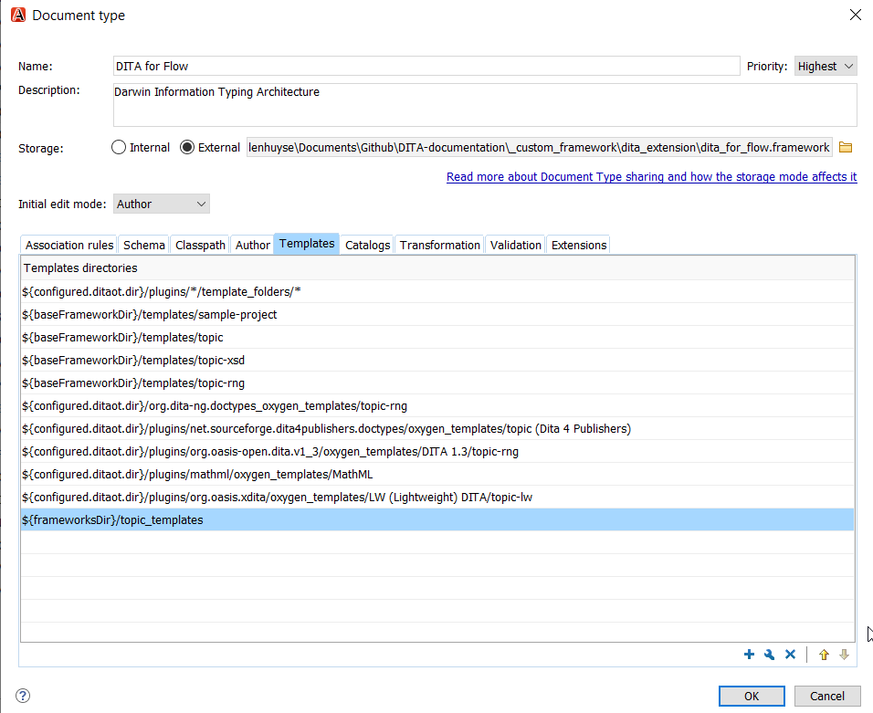

The location of a templates folder is to be referenced in Oxygen.
-
Choose and select for Document Type Association.
-
Double-click DITA for Flow..
-
Select Templates and click the plus button to add the templates directory to the list.
Important: It is recommended to make the reference relative to the framework directory (for example, ${frameworkDir}/topic_templates)
